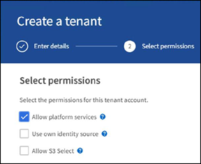
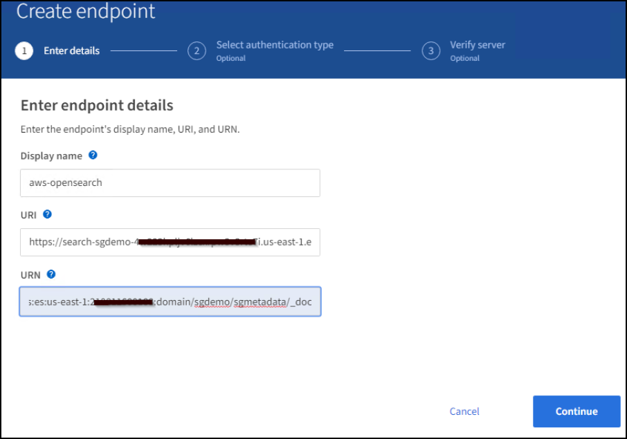
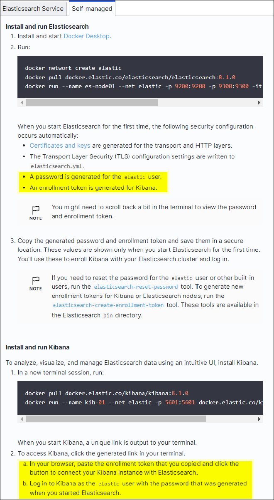
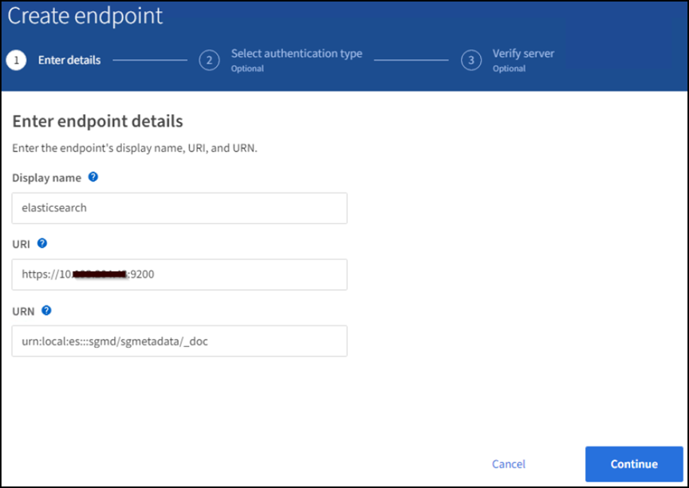
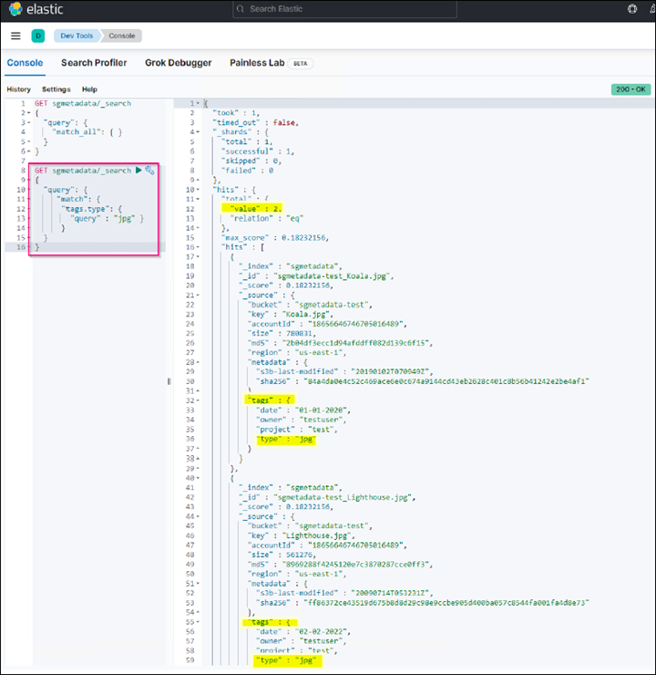

已驗證的協力廠商解決方案
已驗證的協力廠商解決方案
設定StorageGRID 搜尋整合服務
 建議變更
建議變更
本指南詳細說明如何使用StorageGRID Amazon OpenSearch Service或內部部署Elasticsearch來設定NetApp的《支援》11.6搜尋 整合服務。
簡介
支援三種平台服務。StorageGRID
-
《CloudMirror複寫》。StorageGRID將StorageGRID 特定物件從靜止庫鏡射到指定的外部目的地。
-
通知。每個儲存區事件通知、可將針對物件執行的特定動作通知傳送至指定的外部Amazon Simple Notification Service（Amazon SNS）。
-
搜尋整合服務。將Simple Storage Service（S3）物件中繼資料傳送至指定的Elasticsearch索引、您可以在其中使用外部服務來搜尋或分析中繼資料。
平台服務是由S3租戶透過租戶管理程式UI進行設定。如需詳細資訊、請參閱 "使用平台服務的考量"。
本文件為的補充說明 "《英文》《英文》（英文）StorageGRID" 並提供搜尋整合服務的端點和庫位組態逐步指示和範例。此處包含的Amazon Web Services（AWS）或內部部署彈性搜尋設定說明僅供基本測試或示範用途。
對象應熟悉Grid Manager、租戶管理程式、並能存取S3瀏覽器、執行StorageGRID 基本上傳（PUT）和下載（Get）作業、以利進行資訊搜尋整合測試。
建立租戶並啟用平台服務
-
使用Grid Manager建立S3租戶、輸入顯示名稱、然後選取S3傳輸協定。
-
在「權限」頁面上、選取「允許平台服務」選項。如有必要、也可選擇其他權限。

-
設定租戶root使用者初始密碼、或者如果已在網格上啟用識別聯盟、請選取哪個聯盟群組具有root存取權限來設定租戶帳戶。
-
按一下「以root登入」、然後選取「Bucket：Create and Manage Bucket」。
這會帶您前往「租戶管理程式」頁面。
-
從「租戶管理程式」中、選取「我的存取金鑰」以建立及下載S3存取金鑰、以便日後進行測試。
使用Amazon OpenSearch搜尋整合服務
Amazon OpenSearch（前身為Elasticsearch）服務設定
使用此程序可快速且簡單地設定OpenSearch服務、僅供測試/示範之用。如果您使用內部部署Elasticsearch來搜尋整合服務、請參閱一節 搜尋整合服務與內部部署彈性搜尋。

|
您必須擁有有效的AWS主控台登入、存取金鑰、秘密存取金鑰、以及訂閱OpenSearch服務的權限。 |
-
依照中的指示建立新網域 "AWS OpenSearch Service入門"（以下項目除外）：
-
步驟4.網域名稱：sgdemo
-
步驟10：精細存取控制：取消選取「啟用精細存取控制」選項。
-
步驟12.存取原則：選取「Configure Level Access Policy（設定層級存取原則）」、選取「Json」索引標籤以使用下列範例修改存取原則：
-
以您自己的AWS身分識別與存取管理（IAM）ID和使用者名稱取代反白顯示的文字。
-
將反白顯示的文字（IP位址）取代為您用來存取AWS主控台的本機電腦公用IP位址。
-
開啟瀏覽器索引標籤 "https://checkip.amazonaws.com" 尋找您的公有IP。
{ "Version": "2012-10-17", "Statement": [ { "Effect": "Allow", "Principal": {"AWS": "arn:aws:iam:: nnnnnn:user/xyzabc"}, "Action": "es:*", "Resource": "arn:aws:es:us-east-1:nnnnnn:domain/sgdemo/*" }, { "Effect": "Allow", "Principal": {"AWS": "*"}, "Action": [ "es:ESHttp*" ], "Condition": { "IpAddress": { "aws:SourceIp": [ "nnn.nnn.nn.n/nn" ] } }, "Resource": "arn:aws:es:us-east-1:nnnnnn:domain/sgdemo/*" } ] }
-
-
-
等待15到20分鐘、讓網域變成作用中狀態。

-
按一下OpenSearch儀表板URL、在新索引標籤中開啟網域以存取儀表板。如果發生存取遭拒錯誤、請確認存取原則來源IP位址已正確設定為電腦的公用IP、以允許存取網域儀表板。
-
在儀表板歡迎頁面上、選取「自行瀏覽」。從功能表移至「Management（管理）」→「Dev Tools（開發工具）」
-
在「Dev Tools（開發工具）」→「Console（主控台）」下、輸入「PUT <index>'（放置<index>'）」、您可以在其中使用索引來儲存StorageGRID 物件中繼資料。我們在下列範例中使用索引名稱「gmeta資料」。按一下小三角符號以執行PUT命令。預期結果會顯示在右側面板上、如下列範例擷取畫面所示。

-
確認索引可從sgdomain>索引下的Amazon OpenSearch UI中看到。

平台服務端點組態
若要設定平台服務端點、請遵循下列步驟：
-
在租戶管理程式中、前往儲存設備（S3）>平台服務端點。
-
按一下「Create Endpoint（建立端點）」、輸入下列內容、然後按一下「Continue（繼續）」
-
顯示名稱範例「AWS/OpenSearch」
-
「URI」欄位中前面程序步驟2下範例快照中的網域端點。
-
在之前的程序步驟2中、在「URN」欄位中使用的網域ARN、並在ARN結尾加上「/<index>//_doc'」。
在此範例中、URN會變成「arn:AWS：es：us-east-1:211234567890：domain/sgdemo /sgmeydata//_doc'。

-
-
若要存取Amazon OpenSearch sgDomain、請選擇「存取金鑰」作為驗證類型、然後輸入Amazon S3存取金鑰和秘密金鑰。若要進入下一頁、請按一下「Continue（繼續）」。

-
若要驗證端點、請選取「使用作業系統CA憑證並測試及建立端點」。如果驗證成功、則會顯示類似下圖的端點畫面。如果驗證失敗、請確認路徑結尾處的URN包含「/<index>//_doc'、而且AWS存取金鑰和秘密金鑰都正確無誤。

搜尋整合服務與內部部署彈性搜尋
內部部署彈性搜尋設定
此程序僅供快速設定內部部署Elasticsearch和Kibana Using Docker、僅供測試之用。如果Elasticsearch和Kibana伺服器已經存在、請前往步驟5。
-
請遵循此步驟 "Docker安裝程序" 以安裝Docker。我們使用 "CentOS Docker安裝程序" 在此設定中。
sudo yum install -y yum-utils sudo yum-config-manager --add-repo https://download.docker.com/linux/centos/docker-ce.repo sudo yum install docker-ce docker-ce-cli containerd.io sudo systemctl start docker
-
若要在重新開機後啟動Docker、請輸入下列命令：
sudo systemctl enable docker
-
將「VM.max.map_count'」值設為262144：
sysctl -w vm.max_map_count=262144
-
若要在重新開機後保留設定、請輸入下列命令：
echo 'vm.max_map_count=262144' >> /etc/sysctl.conf
-
-
請依照 "彈性搜尋快速入門指南" 自我管理區段、用於安裝及執行Elasticsearch和Kibana泊塢視窗。在此範例中、我們安裝了8.1版。

記下Elasticsearch所建立的使用者名稱/密碼和權杖、您需要這些資訊來啟動Kibana UI和StorageGRID Esplan端點驗證。 
-
Kibana Docker容器啟動後、主控台會顯示URL連結「\https://0.0.0.0:5601`」。以URL中的伺服器IP位址取代0：0：0：0。
-
使用使用者名稱「Elastic」和Elastic在前一個步驟中產生的密碼登入Kibana UI。
-
首次登入時、請在儀表板歡迎頁面上、選取「自行瀏覽」。從功能表中、選取管理>開發工具。
-
在Dev Tools Console（開發工具主控台）畫面上、輸入「放置<index>'」、您可以在其中使用此索引來儲存StorageGRID 物件中繼資料。在此範例中、我們使用索引名稱「shgmeta資料」。按一下小三角符號以執行PUT命令。預期結果會顯示在右側面板上、如下列範例擷取畫面所示。

平台服務端點組態
若要設定平台服務的端點、請遵循下列步驟：
-
在租戶管理程式中、前往儲存設備（S3）>平台服務端點
-
按一下「Create Endpoint（建立端點）」、輸入下列內容、然後按一下「Continue（繼續）」
-
顯示名稱範例：「彈性搜尋」
-
URI：https://<elasticsearch-server-ip或hostname>:9200'
-
urn:「urn:<soes>:es::::<se-unibe-text>/<index-name>//_doc'、其中index-name是您在Kibana主控台使用的名稱。範例：「urn:local:es：：sgmm/sgmadm/_do'

-
-
選取基本HTTP作為驗證類型、輸入使用者名稱「elastic」和Elasticsearch安裝程序產生的密碼。若要前往下一頁、請按一下「Continue（繼續）」。

-
選取「Do Not Verify Certificate and Test and Create Endpoint（不驗證憑證和測試並建立端點）」以驗證端點。如果驗證成功、則會顯示類似下列螢幕快照的端點畫面。如果驗證失敗、請確認URN、URI和使用者名稱/密碼項目正確無誤。

Bucket搜尋整合服務組態
建立平台服務端點之後、下一步是在資源庫層級設定此服務、以便在物件建立、刪除或更新中繼資料或標記時、將物件中繼資料傳送至定義的端點。
您可以使用Tenant Manager將自訂StorageGRID 的功能XML套用至儲存庫、以設定搜尋整合、如下所示：
-
在租戶管理程式中、前往儲存設備（S3）>儲存設備
-
按一下「Create Bucket（建立儲存區）」、輸入儲存區名稱（例如「shgmadmadgtest-test」）、然後接受預設的「us-east-1」區域。
-
按一下「繼續」>「建立工作區」。
-
若要顯示「Bucket Overview」（庫位總覽）頁面、請按一下庫位名稱、然後選取「Platform Services」（平台服務）。
-
選取「啟用搜尋整合」對話方塊。在提供的XML方塊中、使用此語法輸入組態XML。
強調顯示的URN必須符合您所定義的平台服務端點。您可以開啟另一個瀏覽器索引標籤、以存取租戶管理程式、並從定義的平台服務端點複製URN。
在此範例中、我們沒有使用前置詞、表示此儲存區中每個物件的中繼資料都會傳送到先前定義的Elasticsearch端點。
<MetadataNotificationConfiguration> <Rule> <ID>Rule-1</ID> <Status>Enabled</Status> <Prefix></Prefix> <Destination> <Urn> urn:local:es:::sgmd/sgmetadata/_doc</Urn> </Destination> </Rule> </MetadataNotificationConfiguration> -
使用S3瀏覽器以StorageGRID 租戶存取/秘密金鑰連線至功能區、將測試物件上傳至「實元資料測試」儲存區、並將標記或自訂中繼資料新增至物件。

-
使用Kibana UI來驗證物件中繼資料是否已載入sgmeta的索引。
-
從功能表中、選取管理>開發工具。
-
將範例查詢貼到左側的主控台面板、然後按一下三角符號以執行查詢。
下列範例擷取畫面中的查詢1範例結果顯示四筆記錄。這與儲存區中的物件數量相符。
GET sgmetadata/_search { "query": { "match_all": { } } }
下列螢幕擷取畫面中的查詢2範例結果顯示兩筆標記類型為「jpg」的記錄。
GET sgmetadata/_search { "query": { "match": { "tags.type": { "query" : "jpg" } } } }+

-